| 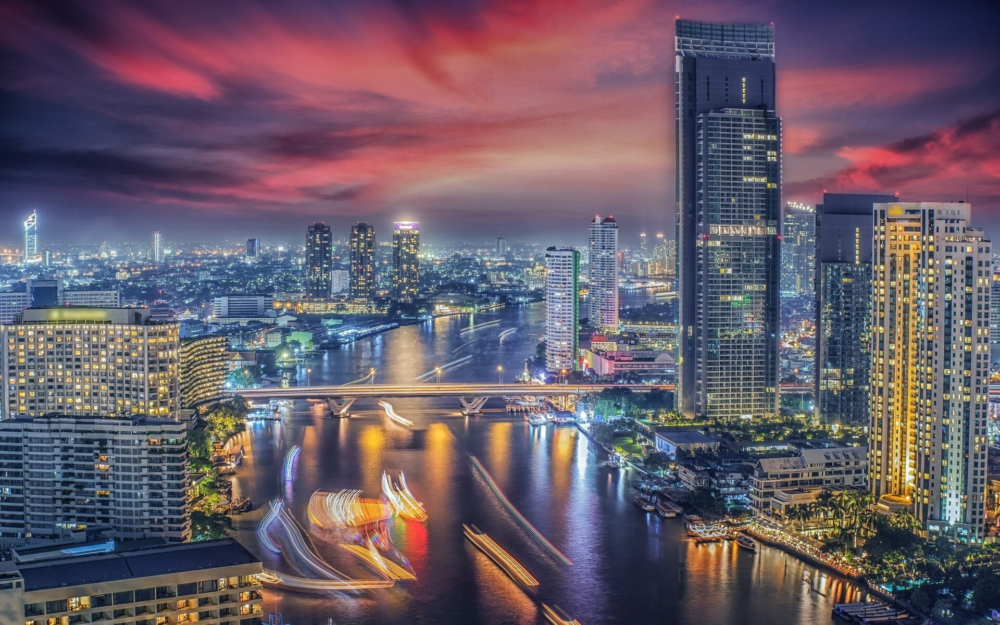 | Bangkok, officially known in Thai as Krung Thep Maha Nakhon and colloquially as Krung Thep, is the capital and most populous city of Thailand. The city occupies 1,568.7 square kilometres (605.7 sq mi) in the Chao Phraya River delta in central Thailand Bangkok traces its roots to a small trading post during the Ayutthaya Kingdom in the 15th century, which eventually grew and became the site of two capital cities, Thonburi in 1768 and Rattanakosin in 1782. Bangkok was at the heart of the modernization of Siam, later renamed Thailand, during the late-19th century, as the country faced pressures from the West. The city was at the centre of Thailand's political struggles throughout the 20th century, as the country abolished absolute monarchy, adopted constitutional rule, and underwent numerous coups and several uprisings. The city, incorporated as a special administrative area under the Bangkok Metropolitan Administration in 1972, grew rapidly during the 1960s through the 1980s and now exerts a significant impact on Thailand's politics, economy, education, media and modern society. |
|
Content: Culture & Tradition Best Places To Explore Live .Love .Eat Best Things To Do |
| Bangkok’s culture is influenced by the modern day, yet still retains very proud links to its tradition and Buddhist spirituality. This culture can be found on every street corner, in the food, language, music, dance, the arts, and Buddhist temples.
"Bangkokians" are a warm and friendly people, generous with their welcoming smile, deeply proud of their "Thai-ness", and normally too polite to show offence, anger or annoyance. Only a fool though, would dare mistake their friendliness for weakness. There are standards of behaviour that should be upheld at all times in Bangkok, and Thailand more broadly. Thais take great pride in their monarchy, especially the King. Visitors are well-advised to respect the reverence in which Bangkokians hold the Thai Royal family. |
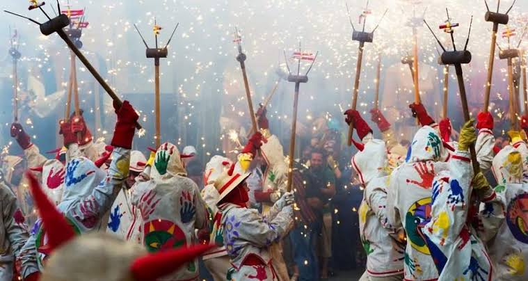 |
| 1. Sea Life Bangkok Ocean World: The Aquatic Wonderland | |
| Looking for places to visit in Bangkok in one day? Formerly known as the Siam Ocean World, the breathtaking Ocean World is certainly amongst the must-visit tourist places in Bangkok and is perfect for those who are visiting Bangkok for one day. It is located two stories underneath the ultra-luxurious Siam Paragon shopping mall that would leave you dazzled with the thrilling experiences that it offers and the 30,000 curious looking creatures it has from across the globe. | 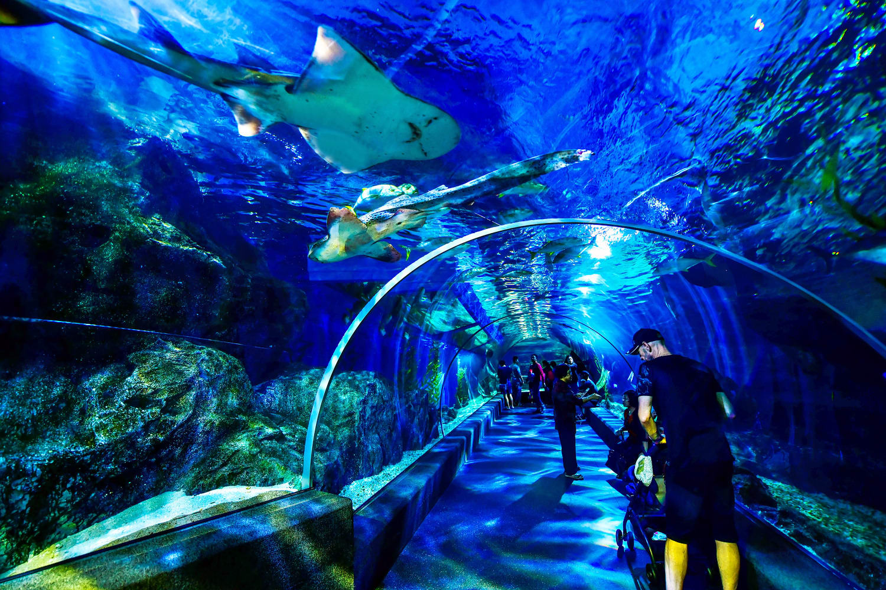 |
| 2. Floating Markets: One Of A Kind Market | |
| If you are coming to Bangkok, you have got to visit these charming floating markets in Bangkok. It is one of the suitable places to visit in Bangkok for kids. Apart from enjoying the boat ride, you can buy tropical fruits and vegetables that are only available in Bangkok. Try the local Thai cuisine at the floating restaurants. If you enjoy the idea of Dal Lake, then you will also enjoy visiting Floating markets in Bangkok. | 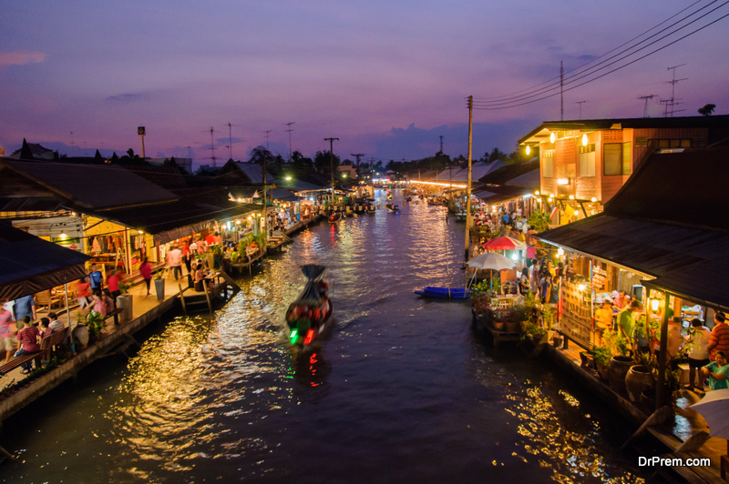 |
| 3. Siam Park City: Thailand’s Largest Theme Park | |
| Siam Amazing Park , more commonly known as Siam Park City ( RTGS: Suan Sayam, pronounced), is an amusement and water park located in the Khan Na Yao District of Bangkok, Thailand. It was founded in November 1980 and remains the oldest amusement and water park complex in Southeast Asia. Located near Bangkok's Suvarnabhumi Airport, it contains attractions such as Southeast Asia's first suspended looping coaster with five inversions and 7-story water slides, which were once among the world's tallest in the early 1980s and a large wave pool. | 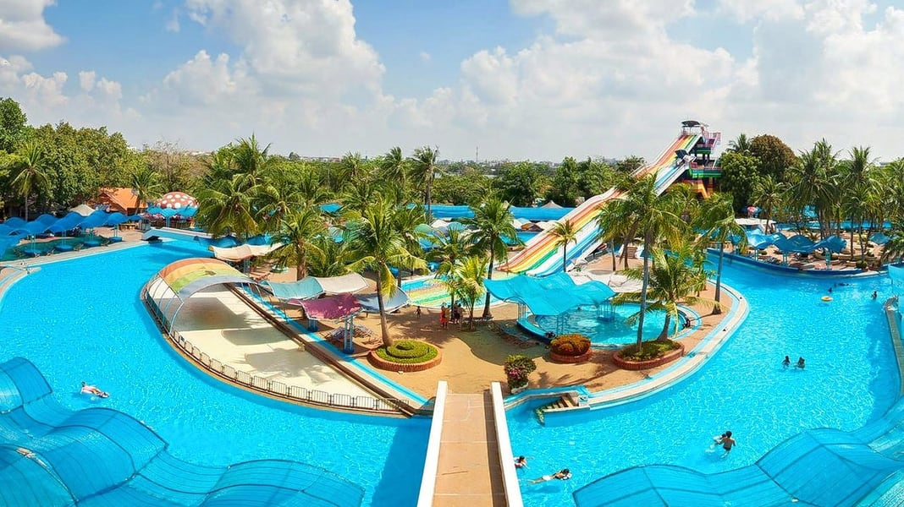 |
| 4.Asiatique: A Happening Night Market | |
| Another one of the tourist places in Bangkok, Asiatique is a delight to visit! One of the most happening night markets in Bangkok, the place offers experiences from around the world and one can’t get enough. Asiatique used to be an international port once but has now been converted into a beautiful night market that offers the visitors a variety of options. From boutiques to fine dining, and small stores to entertainment spaces, Asiatique has everything you could possibly ask for. | 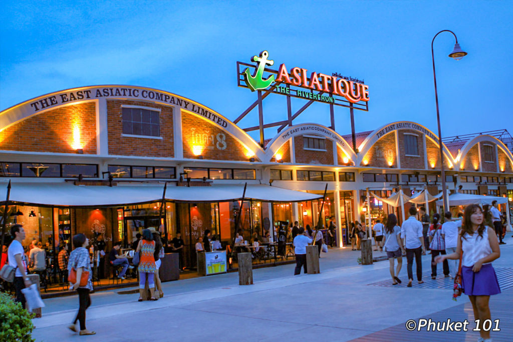 |
| 5. Siam Paragon Mall: For Brand Shopping | |
| One of the top places to go in Bangkok for shopping, the Siam Paragon Mall is all about luxury shopping. If you love high-end international brands and luxury shopping is your calling then Siam Paragon Mall is the place to be. More than 70 globally renowned brands ranging from Jimmy Choo to Prada are present here and the mall is also home to the largest aquariums in Southeast Asia. |  |
| 1. Pad Thai: Thailand's Delicious National Dish. | |
| You have probably had some knockoff pad Thai before traveling to Bangkok, but no phony foreign dish can compete with the popular noodle concoction that put Thailand on the culinary map. Cooking pad Thai is no easy task; every ingredient has to be meticulously added to create a delectable dish. Pad Thai must be prepared quickly as well to ensure it is hot and flavorsome. It consist of stir-fried rice noodles with eggs, vegetables and tofu in a sauce of tamarind, fish, dried shrimp, garlic, red chilli pepper and sugar. Some of the ingredients are provided on the side as condiments, including red chilli pepper, lime wedges and peanuts. |
 |
| 2. Stir-Fried Basil With Pork (Pad Kra Pao Moo). | |
| This dish might sound ordinary, but it is by far one of the most delicious Thai concoctions to be found in Bangkok. It is a spicy stir fry of ground pork and Thai basil. Serve it Thai style with a crispy fried egg and steamed rice. Pad Kra Pao Moo is traditionally served very spicy in Thailand, and surprisingly a common breakfast dish. Thai people like to start their day with a spicy meal to wake you up! |  |
| 3. Papaya Salad (Som Tum). | |
| One of the most unique dishes in Thailand is the infamous green papaya salad. Garlic, sugar, fish sauce, lime, and tamarind juice all go into the making of this mouthwatering salad. Combine this abundance of flavors with freshly shredded green papaya and carrots, chilies, peanuts, tomatoes and sticky rice, and you have yourself the perfect Thai meal.
Som Tum has all the benefits of any vegetable salad, being full of fiber and vitamins while remaining low on calories, fat and carbs. |
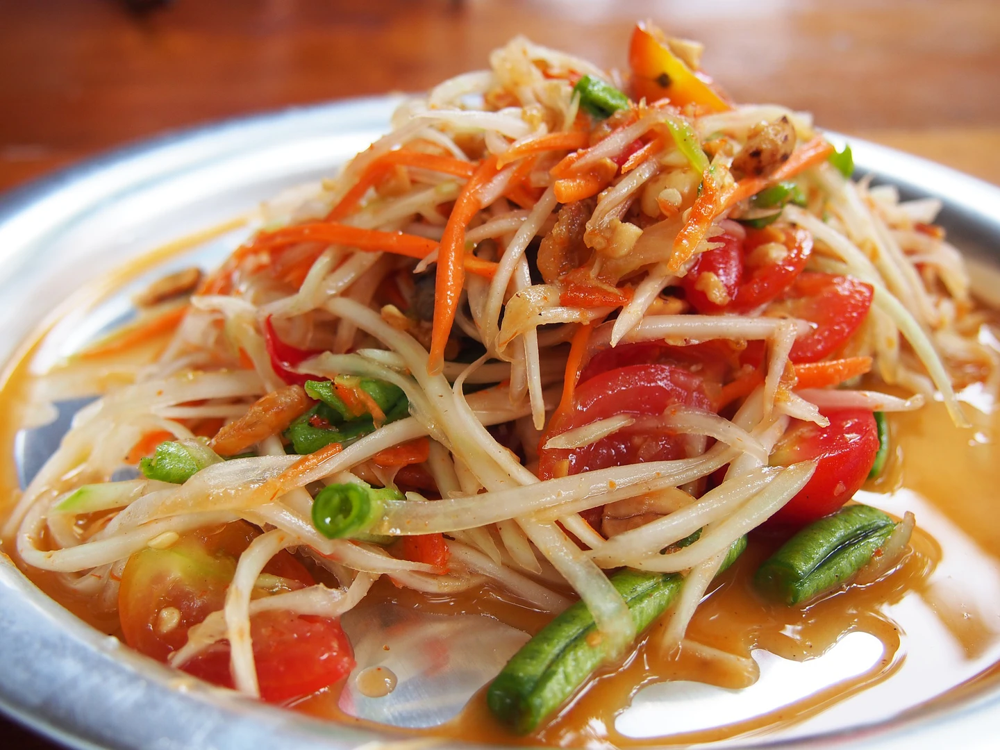 |
| 4. Fried Banana Pancakes (Roti Gluay) . | |
| Roti Gluay is the most craved street food in Bangkok. As much as a treat Roti Gluay is to your taste buds, the preparation of it is a treat to the eyes. Watching the vendors move their hands swiftly while making Roti Gluay is an experience in itself. You can also add toppings of your choice to the pancakes, ranging from coconut, sugar, honey to Nutella! This Thai version of a pancake will leave you wanting for more. These pancakes are gluten-free and dairy-free — they really are made with just bananas and eggs, no tricks. |
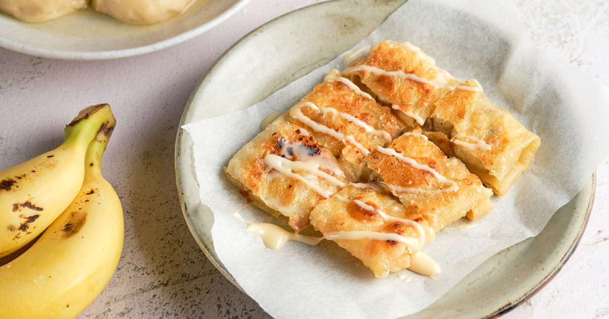 |
| 5. Hot And Sour Prawn Soup (Tom Yum Goong). | |
| What do you get when you combine lemongrass, galangal ginger, lime leaves, mushrooms, chilies, and tomatoes in one flavorful soup? Tom yum goong. Goong means shrimp, but you can dine on this savory soup with chicken or make the meal vegetarian instead. This dish can be found in kitchens around the world but is especially celebrated in Thailand. It consit of prawns,lemongrass, galangal, kaffir lime leaves, fresh Thai chilies, and fresh lime juice, that all combine to create a healthy and soothing broth. |
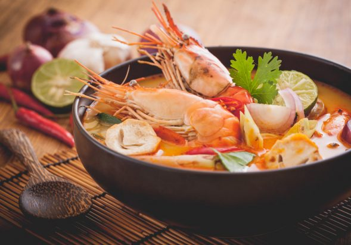 |
| 1. Take a Boat Trip along the Chao Phraya River | |
| Some people refer to Bangkok as the ‘Venice of the East’ this is due to the Chai Phraya River flowing through Bangkok and all of the little canals that feed off of it. The river is the lifeblood of Bangkok, even today 50,000 people still go to work on one of the many ferries that go up and down. Taking a boat trip down the river is fascinating as you will see high rise condominiums and fancy hotels in one part whilst you will see wooden shacks and children playing in the water in other parts. Feel free to get on and off at any of the stops the ferries make to further explore the city. |
 |
| 2. Ride the Sky Train | |
| There is only one way to get around Bangkok at any speed whilst keeping cool and that is to jump aboard one of the sky trains. With air conditioned carriages there is no better way to get around. In most instances you are high above the traffic below giving you a view of the city but also the train takes the most direct route. With nearly every part of Bangkok you would want to visit having a train station, travel could not be simpler. |
 |
| 3. Take a trip around Chatuchak Market. | |
| If you like shopping you need to check this place out. If you hate shopping you need to give this place a wide berth. With over 8000 stalls covering 27 acres of space this is one of the largest markets in the world. Open every Saturday and Sunday it attracts nearly 200,000 visitors a day, you will find everything you could ever imagine for sale here and mostly at local prices rather than tourist prices, it is certainly worth picking up a map before you go to avoid you being lost in the market for hours. |
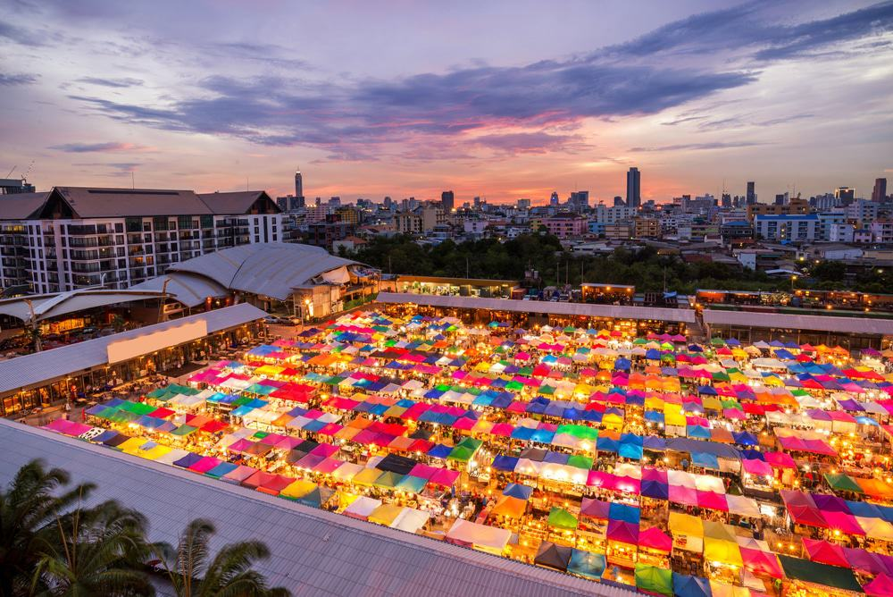 |
| 4.Eat Out At Chinatown | |
| Every major city has its own Chinatown and Bangkok is no exception to this, you know you have arrived when you walk through the ceremonial Chinese gates and into Chinatown itself.
Packed full of street stalls and restaurants the choice of places to eat will be endless, nowhere else in Bangkok will you get to try as many different kinds of Chinese food as you can here, especially at such good prices. If it is gold you are on the lookout for it is said that this is also the best place in Bangkok to look. |
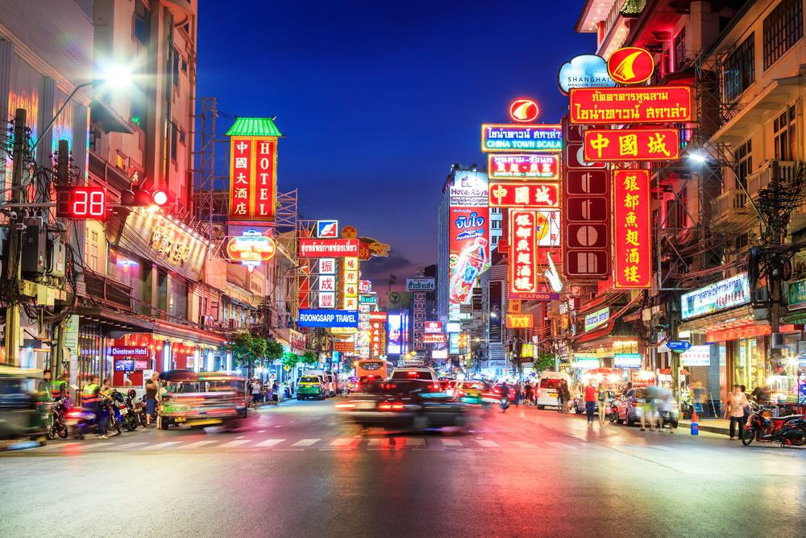 |
| 5. Watch Kickboxing (Muay Thai) | |
| The whole of Thailand is full of kickboxing stadiums but the biggest fights happen in Bangkok, normally at either the Lumpini or Ratchadamnoen stadiums. Muay Thai is the national sport of Thailand and it is talked about everywhere. The viewing figures on TV are some of the highest for any show that is aired. An evening spent at the stadium is sure to be action packed as the locals get so immersed in the fights that the atmosphere reaches fever pitch. There is usually somebody walking around taking bets as well if that is of interest to you. Book Online: Muay Thai Rajadamnern Boxing Stadium |
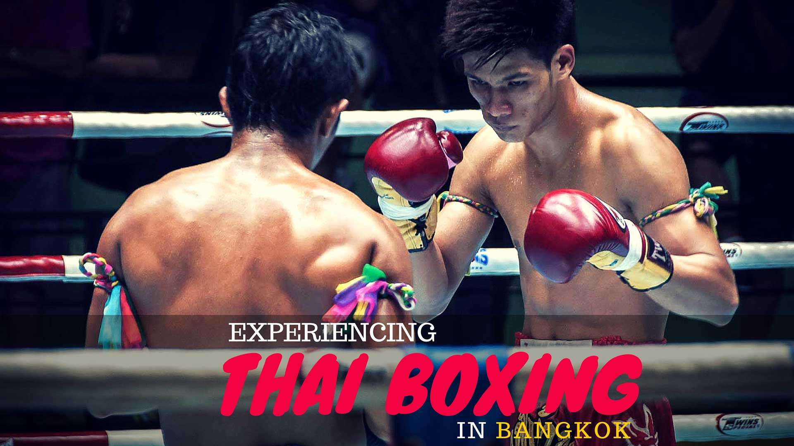 |